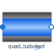

TestWallFrictionPressure drop in pipe due to wall friction (only for test purposes; if needed use Pipes.StaticPipe instead) |

|
Parameters (15)
| dp_start |
Value: dp_nominal Type: AbsolutePressure (Pa) Description: Guess value of dp = port_a.p - port_b.p |
|---|---|
| m_flow_small |
Value: if system.use_eps_Re then system.eps_m_flow * m_flow_nominal else system.m_flow_small Type: MassFlowRate (kg/s) Description: Small mass flow rate for regularization of zero flow |
| show_T |
Value: true Type: Boolean Description: = true, if temperatures at port_a and port_b are computed |
| show_V_flow |
Value: true Type: Boolean Description: = true, if volume flow rate at inflowing port is computed |
| allowFlowReversal |
Value: system.allowFlowReversal Type: Boolean Description: = true to allow flow reversal, false restricts to design direction (m_flow >= 0) |
| momentumDynamics |
Value: Types.Dynamics.SteadyState Type: Dynamics Description: Formulation of momentum balance |
| m_flow_start |
Value: system.m_flow_start Type: MassFlowRate (kg/s) Description: Start value of mass flow rates |
| data |
Value: LossFactorData.wallFriction(length, diameter, roughness) Type: LossFactorData Description: Loss factor data |
| m_flow_nominal |
Value: if system.use_eps_Re then system.m_flow_nominal else 1e2 * system.m_flow_small Type: MassFlowRate (kg/s) Description: Nominal mass flow rate |
| use_Re |
Value: system.use_eps_Re Type: Boolean Description: = true, if turbulent region is defined by Re, otherwise by m_flow_small |
| from_dp |
Value: true Type: Boolean Description: = true, use m_flow = f(dp) else dp = f(m_flow) |
| show_Re |
Value: false Type: Boolean Description: = true, if Reynolds number is included for plotting |
| length |
Value: Type: Length (m) Description: Length of pipe |
| diameter |
Value: Type: Diameter (m) Description: Inner diameter of pipe |
| roughness |
Value: Type: Roughness (m) Description: Absolute roughness of pipe (> 0 required, details see info layer) |
Inputs (1)
| pathLength |
Default Value: 0 Type: Length (m) Description: Length flow path |
|---|
Connectors (2)
| port_a |
Type: FluidPort_a Description: Fluid connector a (positive design flow direction is from port_a to port_b) |
|
|---|---|---|
| port_b |
Type: FluidPort_b Description: Fluid connector b (positive design flow direction is from port_a to port_b) |
Components (5)
| state_a |
Type: ThermodynamicState Description: state for medium inflowing through port_a |
|
|---|---|---|
| state_b |
Type: ThermodynamicState Description: state for medium inflowing through port_b |
|
| system |
Type: System Description: System properties |
|
| data |
Type: LossFactorData Description: Loss factor data |
|
| state_nominal |
Type: ThermodynamicState Description: Medium state to compute nominal pressure drop |